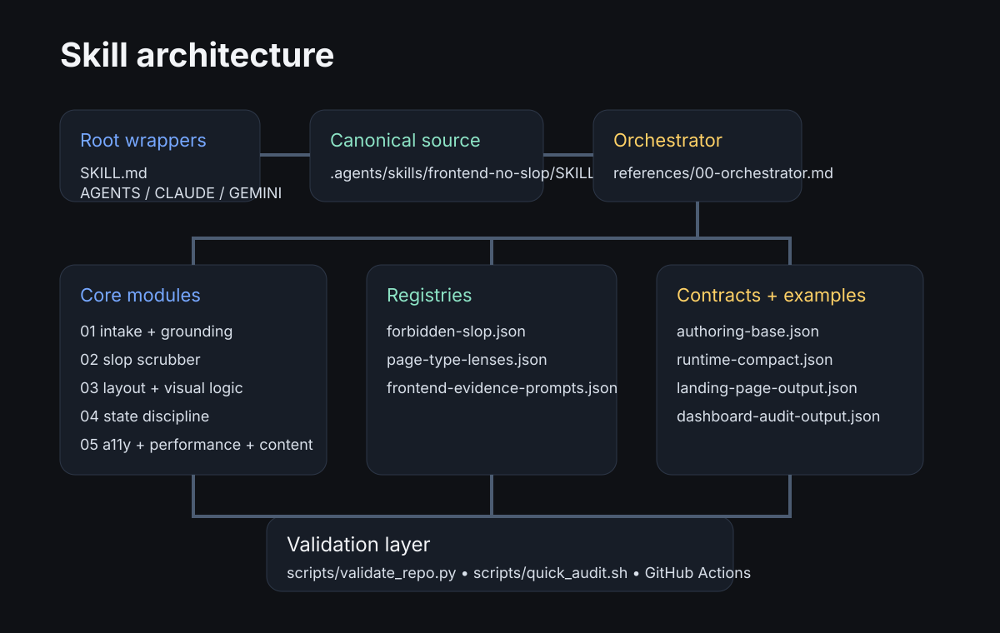

Concrete UI critique and planning for real interfaces. It forces evidence, explicit states, and implementation-level output instead of decorative design language.
7 core modulesStructured critique pipeline
3 registriesEvidence + anti-slop controls
2 schemasAuthoring + compact contracts
CI validatedRepo + docs checks
What this package is optimized for
Landing page and dashboard critique anchored in real task flow.
Component specs with empty/loading/error/success/disabled state coverage.
Accessibility and performance risk surfacing with practical mitigation.
Implementation plans that map to code and handoff artifacts.
landing pagedashboardsettingstableformsmodals
Quality gates
Pass condition: no placeholders, valid schemas, linked wrappers, docs integrity.
Review condition: weak evidence, missing state logic, vague copy.
Fail condition: broken structure, invalid outputs, or anti-slop violations.
Execution flow with state and evidence checks at each stage.

System map for maintainers and adapter authors.
Start path
Begin at SKILL.md, then route to .agents/skills/frontend-no-slop/SKILL.md. For quick checks run python scripts/validate_repo.py and python scripts/check_docs.py.